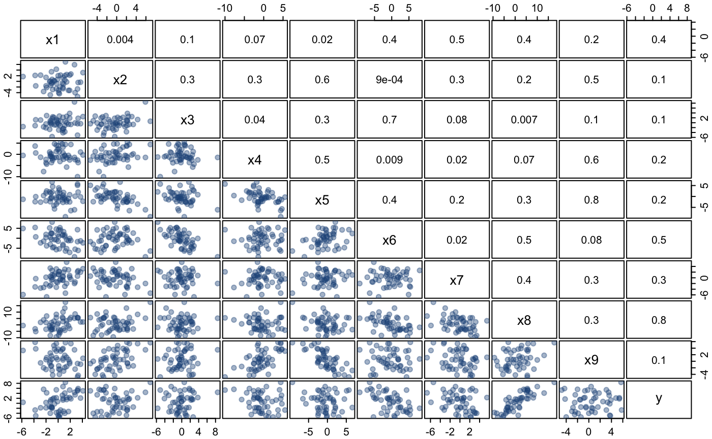

The artificially generated data set was originally designed to emphasise statistical deficiencies in stepwise procedures, but here it will be used to highlight the utility of the various procedures and plots provided by mplot. The data set and details of how it was generated are provided with the mplot package.
# install.packages("mplot")
data("artificialeg", package = "mplot")
help("artificialeg", package = "mplot")A scatterplot matrix of the data and the estimated pairwise correlations are given in the pairs plot below. There are no outliers and we have not positioned the observations in a subspace of the artificially generated data set. All variables, while related, originate from a Gaussian distribution. Fitting the full model yields no individually significant variables.
library("mplot")
data("artificialeg")
full.model = lm(y ~ ., data = artificialeg)
round(summary(full.model)$coef, 2)## Estimate Std. Error t value Pr(>|t|)
## (Intercept) -0.10 0.33 -0.31 0.76
## x1 0.64 0.69 0.92 0.36
## x2 0.26 0.62 0.42 0.68
## x3 -0.51 1.24 -0.41 0.68
## x4 -0.30 0.25 -1.18 0.24
## x5 0.36 0.60 0.59 0.56
## x6 -0.54 0.96 -0.56 0.58
## x7 -0.43 0.63 -0.68 0.50
## x8 0.15 0.62 0.24 0.81
## x9 0.40 0.64 0.63 0.53Performing default stepwise variable selection yields a model with all explanatory variables except \(x_8\). As an aside, the dramatic changes in the p-values indicate that there is substantial interdependence between the explanatory variables even though none of the pairwise correlations in the pairs plot are particularly extreme.
par(mar=c(0,0,0,0), mgp=c(1,0.5,0), tcl=-0.3, bg = "transparent")
panel.cor <- function(x, y, digits=1, prefix="", cex.cor, ...)
{
usr <- par("usr"); on.exit(par(usr))
par(usr = c(0, 1, 0, 1))
r <- abs(cor(x, y))
txt <- format(c(r, 0.123456789), digits=digits)[1]
txt <- paste("", txt, sep="")
text(0.5, 0.5, txt, cex = 1)
}
pairs(artificialeg, upper.panel = panel.cor,
pch = 19, col = '#22558866', oma = c(1.5,1.5,1.5,1.5),
cex.labels = 1.25, gap = 0.2)
Figure: scatterplot matrix of the artificially generated data set with estimated correlations in the upper right triangle. The true data generating process for the dependent variable is \(y=0.6\, x_8 + \varepsilon\) where \(\varepsilon\sim\mathcal{N}(0,2^2)\).
## Estimate Std. Error t value Pr(>|t|)
## (Intercept) -0.11 0.32 -0.36 0.72
## x1 0.80 0.19 4.13 0.00
## x2 0.40 0.18 2.26 0.03
## x3 -0.81 0.19 -4.22 0.00
## x4 -0.35 0.12 -2.94 0.01
## x5 0.49 0.19 2.55 0.01
## x6 -0.77 0.15 -5.19 0.00
## x7 -0.58 0.15 -3.94 0.00
## x9 0.55 0.19 2.90 0.01The true data generating process is, \(y = 0.6\,x_{8} + \varepsilon\), where \(\varepsilon\sim\mathcal{N}(0,2^2)\). The bivariate regression of \(y\) on \(x_{8}\) is the more desirable model, not just because it is the true model representing the data generating process, but it is also more parsimonious with essentially the same residual variance as the larger model chosen by the stepwise procedure. This example illustrates a key statistical failing of stepwise model selection procedures, in that they only explore a subset of the model space so are inherently susceptible to local minima in the information criterion (Harrell, 2001).
Perhaps the real problem with of stepwise methods is that they allow researchers to transfer all responsibility for model selection to a computer and not put any real thought into the model selection process. This is an issue that is also shared, to a certain extent with more recent model selection procedures based on regularisation such as the lasso and least angle regression (Tibshirani, 1996; Tibshirani et al., 2004), where attention focusses only on those models that are identified by the path taken through the model space. In the lasso, as the tuning parameter \(\lambda\) is varied from zero to \(\infty\), different regression parameters remain non-zero, thus generating a path through the set of possible regression models, starting with the largest optimal model when \(\lambda=0\) to the smallest possible model when \(\lambda=\infty\), typically the null model because the intercept is not penalised. The lasso selects that model on the lasso path at a single \(\lambda\) value, that minimises one of the many possible criteria (such as 5-fold cross-validation, or the prediction error) or by determining the model on the lasso path that minimises an information criterion (for example BIC).
An alternative to stepwise or regularisation procedures is to perform exhaustive searches of the model space. While exhaustive searches avoid the issue of local minima, they are computationally expensive, growing exponentially in the number of variables \(p\), with more than a thousand models when \(p=10\) and a million when \(p=20\). The methods provided in the mplot package and described in the remainder of the article go beyond stepwise procedures by incorporating exhaustive searches where feasible and using resampling techniques to provide an indication of the stability of the selected model. The mplot package can feasibly handle up to 50 variables in linear regression models and a similar number for logistic regression models when an appropriate transformation (described in the birth weight example) is implemented.